更新日期：2026-07-21 ｜ 拆解工具：ache-chaijie-skill（对标发现路由）｜ 4 个账号已站内实时验证
行业资料普遍指出——「面向企业家的健康科普」在小红书上仍是空白赛道。
| # | 账号 | 验证 | 粉丝（第三方） | 对标价值 | 最可复制的点 |
|---|---|---|---|---|---|
| 1 | 陆乔安Joanne 主页链接 ✅ | 已验证 | 小红书≈67w 全网≈200w | 科学食养主理人 IP 标杆，起号节奏/信任构建最成熟 | 专业背书→干货建信任→矩阵号+直播→自创品牌；半年 0 到头部 |
| 2 | 营养师赵兆 主页链接 ✅ | 已验证（32篇可见） | ≈50.5w（第三方） | 最贴高压职场人健康科普；注册营养师，专业背书强 | 专业资质+场景化痛点（名人/富豪饮食）+科学有趣表达；多平台分发 |
| 3 | 欧阳会食养 主页链接 ✅ | 已验证（32篇可见） | ≈75w（第三方） | 中式食养头部，细分赛道+矩阵+店播+自创品牌 | 细分定位+日更+专业背书+矩阵+店播「真诚有用勤快不装」 |
| 4 | 自然养生道 主页链接 ✅ | 已验证（31篇可见） | ≈2w（涨速快） | 与你数字人口播形态最像——AI 精灵女孩讲养生 | 数字人 IP+复杂科普拆成有趣短内容+治愈系；低频但爆款率高 |
| # | 标题 | 点赞 |
|---|---|---|
| 1 | 普通人跟C罗自律吃一天,在中国花多少💰？ | 2.4万 |
| 2 | 记忆差脑子钝?3类“大脑毒素”让你偷偷变笨 | 1.1万 |
| 3 | 爆改富豪食谱！中式抗炎一周晚餐，超简单 | 1万 |
| 4 | 熬夜后精神萎靡？4招补救！球迷必看 | 9740 |
| 5 | 一周33种食物+补剂,掏家底分享！吃出好状态 | 7440 |
| 6 | 运动员千万💰大脑保养,普通人0成本抄作业 | 5849 |
| 7 | 拜托了！30+女性,真的需要更新你的营养系统 | 5817 |
| 8 | 3招吃对碳水，佛系运动 练出明星薄肌！ | 5803 |
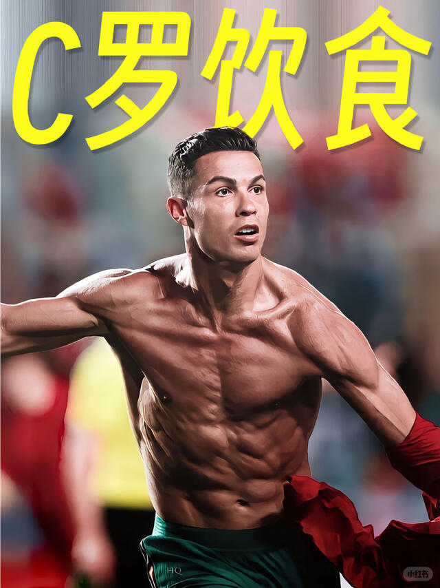
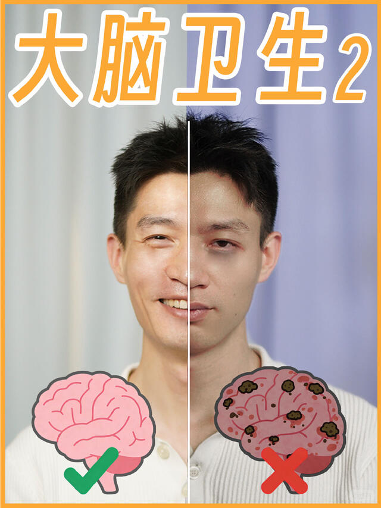
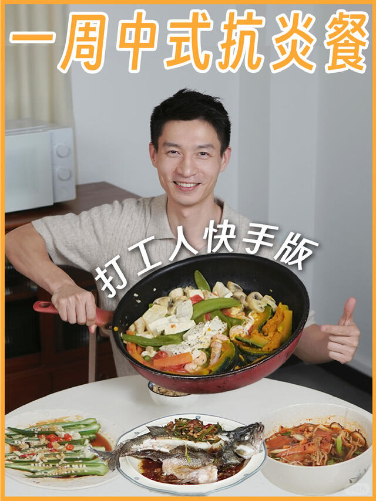
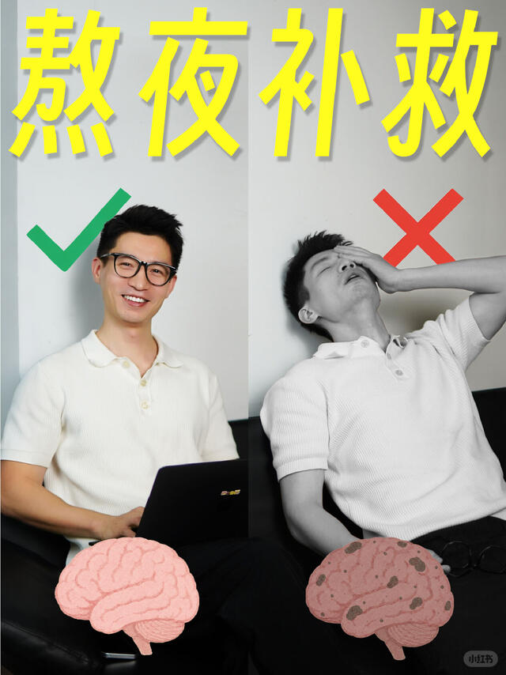
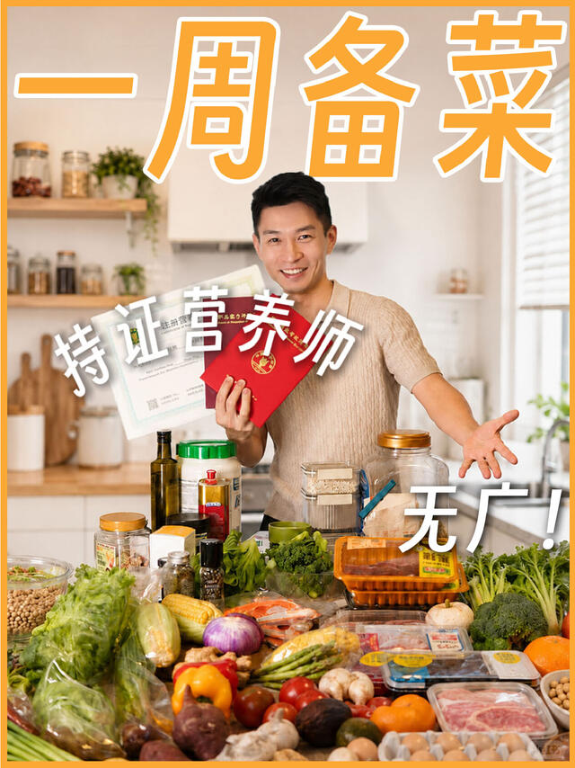
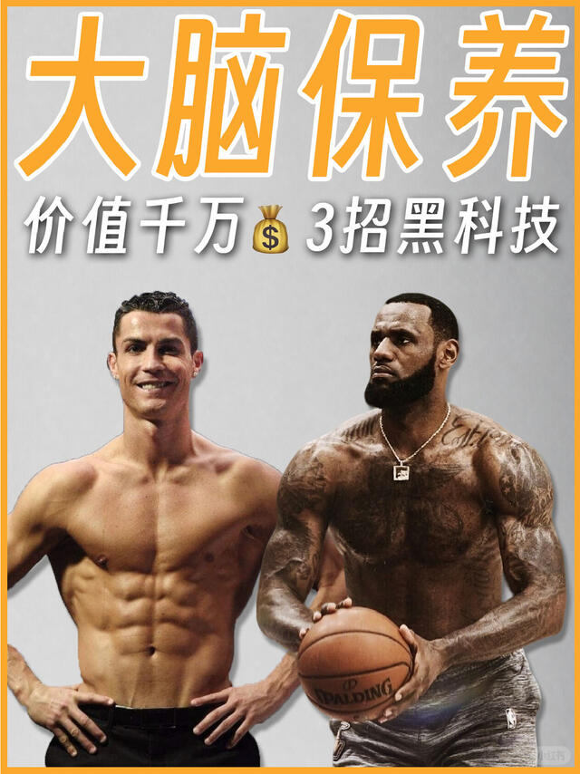
| # | 标题 | 点赞 |
|---|---|---|
| 1 | 九大体质｜普通人养生需要知道的一切！（下） | 5492 |
| 2 | 2026超级三伏计划🔥｜今年真不一样❗️（收藏版 | 5012 |
| 3 | 预测之书｜2026马年五运六气🌟（全年养生版） | 2023 |
| 4 | 三伏艾灸有顺序❗️不是谁都能灸的，看完就懂 | 1827 |
| 5 | 人赚不到气血以外的钱… 早看早富！ | 1473 |
| 6 | 真·实践的结果，不是纸上谈兵 | 1352 |
| 7 | 三伏前必看｜中焦通了的感受，原来是这样的 | 1218 |
| 8 | 答应你们的功课｜懒人养生“刮五指，养全身” | 1086 |
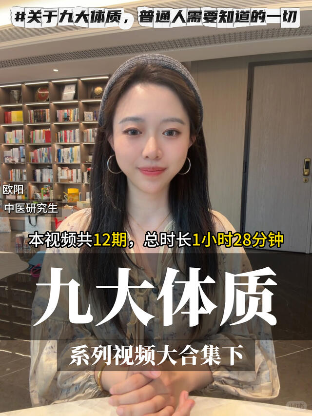
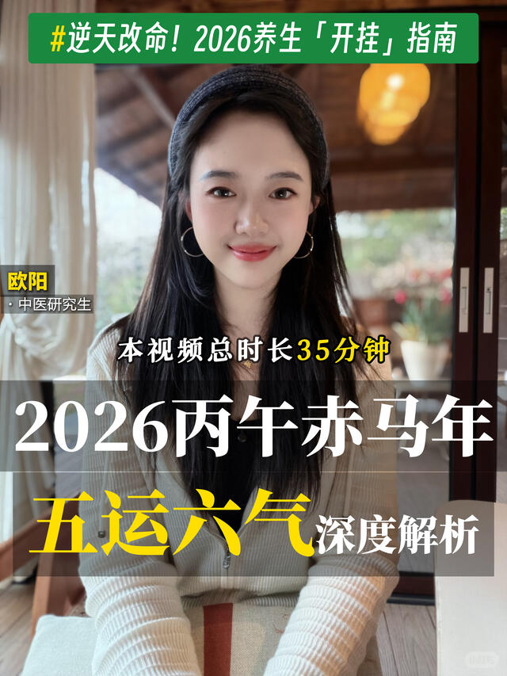
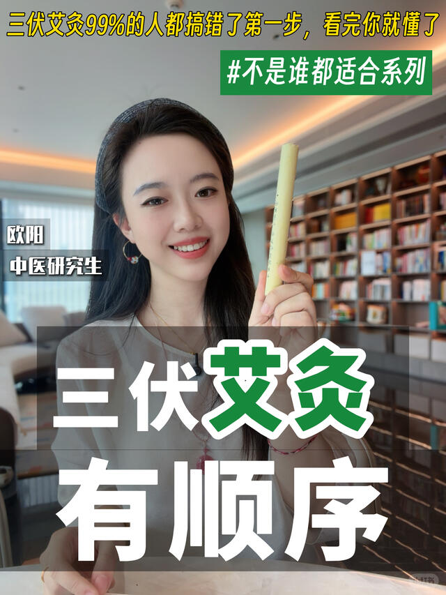
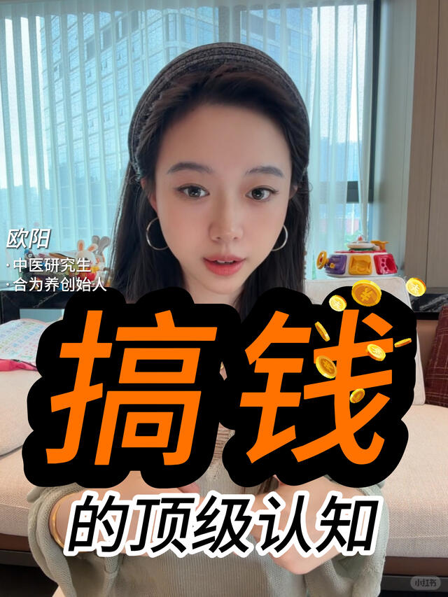
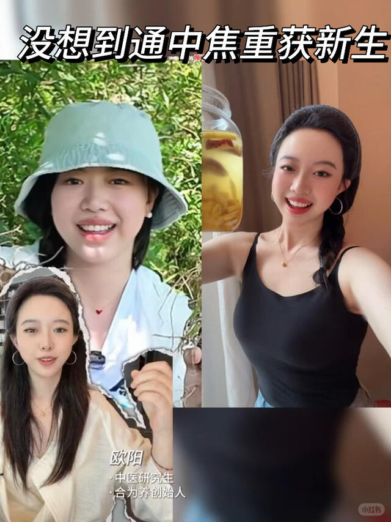
| # | 标题 | 点赞 |
|---|---|---|
| 1 | 发出声音嘘（xu）有助力心脏所上的香气 | 3万 |
| 2 | 道家六字诀、汉语拼音里的长寿之法 | 1万 |
| 3 | 民间猛男汤 | 79 |
| 4 | 每天听二十分钟，舒缓情绪，放松心情 | 71 |
| 5 | 多巴胺释放曲 | 65 |
| 6 | 肩颈堵塞必练四个动作 | 47 |
| 7 | 在小红书轻养生 养生就是养健康之道 中式养生养生操 | 38 |
| 8 | 最好的治愈源于自然馈赠 | 38 |
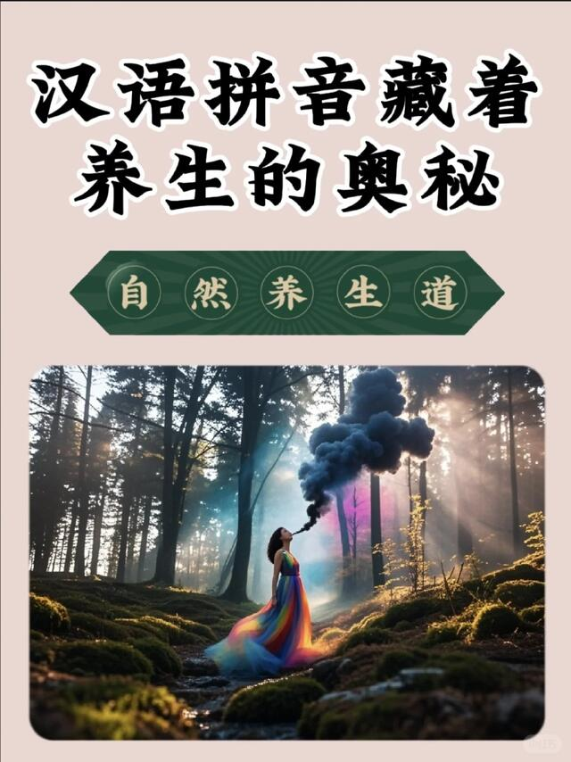
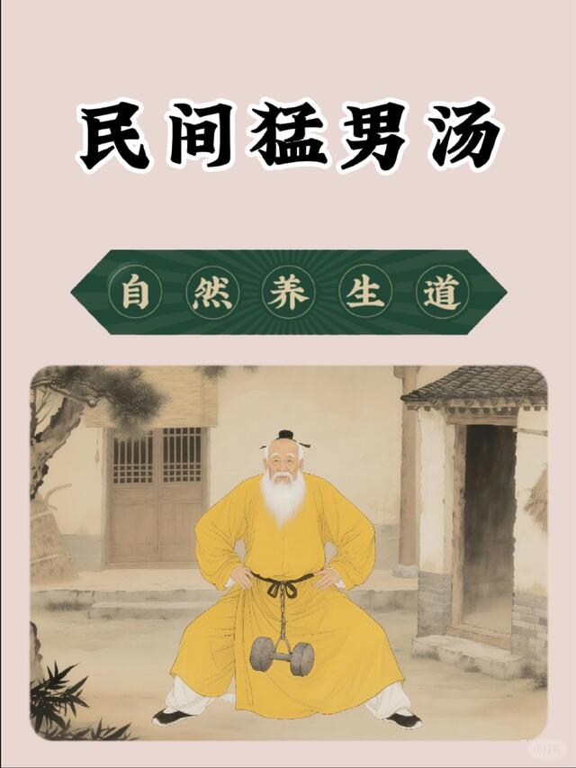
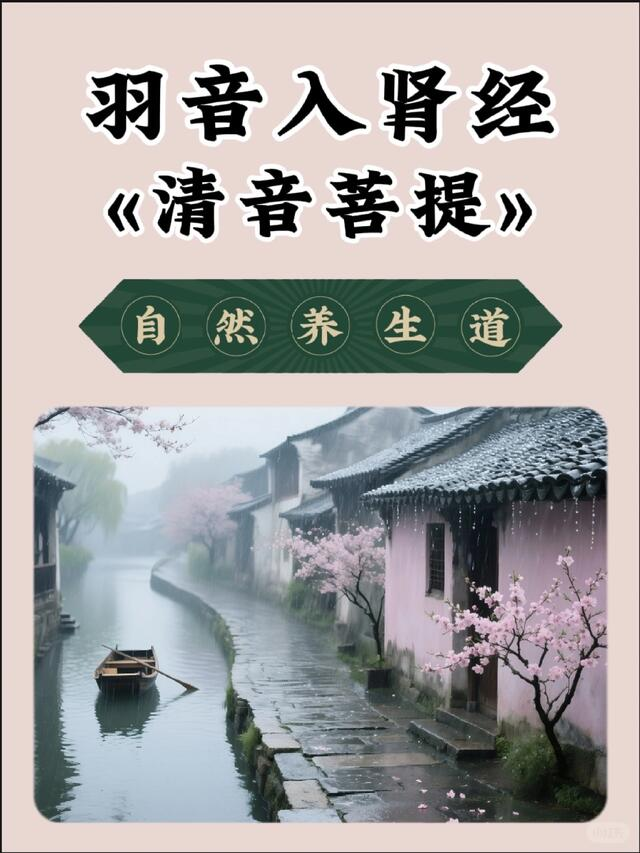
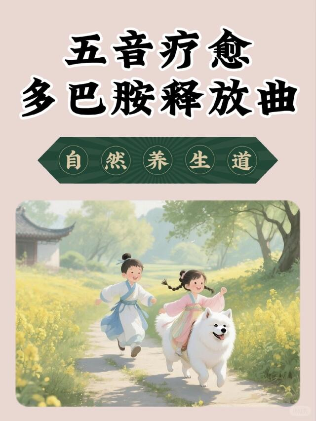
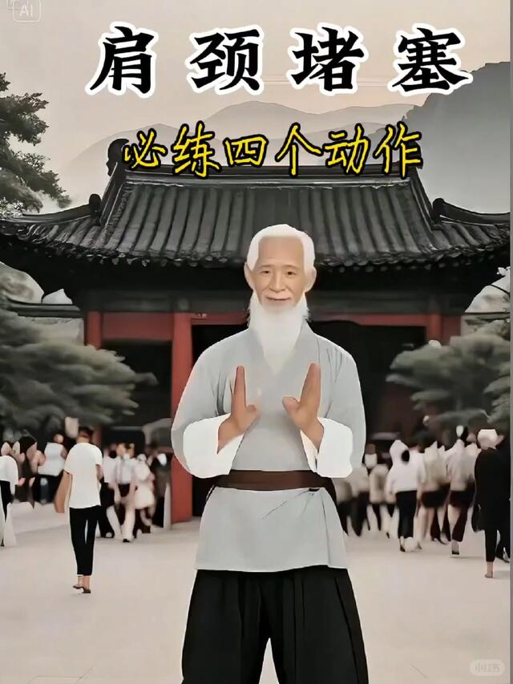
标题母版（可直接套）
① 「X 岁老板都在偷偷做的 N 个 ___ 习惯」
② 「为什么越忙越要 ___：企业家的 ___ 真相」
③ 「应酬不断还不出问题的 N 条 ___ 法则」
④ 「如果你从今天开始 ___，3 个月后身体会 ___」
数据来源：陆乔安Joanne、营养师赵兆、欧阳会食养、自然养生道 4 个账号的昵称/简介/可见笔记/封面均来自 2026-07-21 小红书公开主页实时抓取（公开内嵌 __INITIAL_STATE__，未绕过登录/风控）；粉丝量为第三方平台口径、可能已变化。
合规边界：本报告仅做公开内容的方法论拆解，不编造数据；数字人内容须标注「AI 生成 / 虚拟形象」，不冒充真人专业资质；引用研究须标注来源；向第三方平台下载内容前请留意对应平台服务条款。